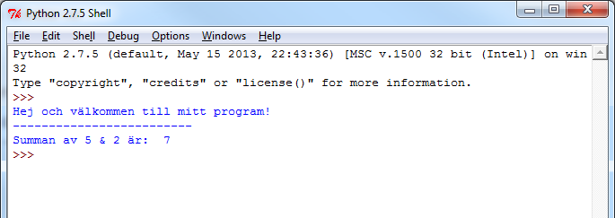

2. Skriva Python-kod i egna filer
Väljer du “New Window” i “File”-menyn får du ett nytt fönster som är Pythons egen editor. Här kan du skriva Python-kod och exekvera den. Trycker du på F5-tangenten eller väljer “Run Module” i fönstrets “Run”-meny kommer programmet att exekveras (efter att först ha frågat ifall du vill spara det). Resultatet ser du i IDLEs exekveringsfönster (eftersom Python-filer är ren text så är du självklart fri att använda vilket annat textredigeringsprogram som du vill).
Vill du komma åt Pythons dokumentation kan du trycka på F1-tangenten. Då får du upp Python-dokumentationen antingen i ett eget dokumentfönster eller via nätet i en webbläsare (beroende på vilken datormiljö du använder). Under Tutorial hittar du kortare exempel och förklaringar på hur du skriver Python-kod. Under Python Library Reference finner du mer detaljerad information om nyckelord, inbyggda datatyper och standardbibliotek.
Övningsuppgift
- Börja med att skapa en ny Python-fil (välj du “New Window” i “File”-menyn) och spara den som “program.py”
- I din fil skriv följande:
1 print("Hej och välkommen till mitt program!")
2 print("-"*25)
3 print("Summan av 5 & 2 är: ", 5 + 2)- Spara filen & kör den sedan (F5)
När du trycker på F5 (och kör din kod i IDLE) så ser du att alla kod i din fil “program.py” körs, i den ordning som koden är skriven i. Det borde se ut såhär:

Funktionen “print”
Funktionen “print” skriver ut valda “saker” i IDLE (det som visas blått i fönsterna ovan). “Sakerna” som skrivs ut kan vara av olika datatyper, t.ex. text (strängar), siffror (tal) eller true/false (booleans). Vi väljer alltså vad som ska visas för användaren i IDLE när filen körs genom funktionen “print”.
Testa att skriv i din fil:
1 2 + 5
2 print(2 + 5)Vad är skillnaderna i exmeplen ovan - och vad händer på respektive kodrad?
Testa gärna att skriva ut lite fler strängar och beräkningar i IDLE. När ni tycker att detta fungerar bra så gå vidare till nästa del av laborationen.